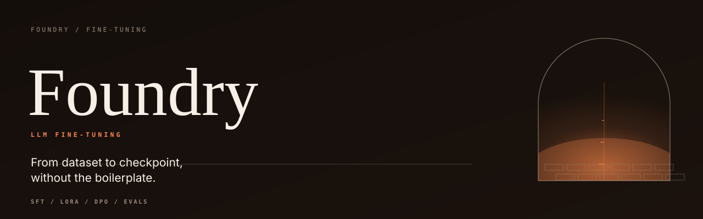

Validated input
Parse SFT and DPO JSONL, reject malformed records with line numbers, render special tokens, and measure length before training starts.

Parse SFT and DPO JSONL, reject malformed records with line numbers, render special tokens, and measure length before training starts.
Plan LoRA targets, count trainable parameters per projection, and keep the alpha over r scaling visible in the adapter manifest.
Accumulate gradients, clip by global norm, advance a warmup plus cosine schedule, and write JSON checkpoints that can be audited.
$ python -m foundry stats --data examples/sft.jsonl dataset examples/sft.jsonl kind sft records 8 turns 23 characters 3,253 est. tokens 951 total mean 118.9 median 115.5 p95 181.0 max 181 estimate characters / 4 (no tokenizer; approximate) roles assistant=9 system=5 user=9 $ python -m foundry schedule --steps 20 --warmup 4 --every 4 step learning_rate 0 0.0000750000 4 0.0003000000 8 0.0002604594 12 0.0001650000 16 0.0000695406 20 0.0000300000
Indicative single-process numbers measured on an Apple M5 with CPython 3.14.6; see the README for the full table.